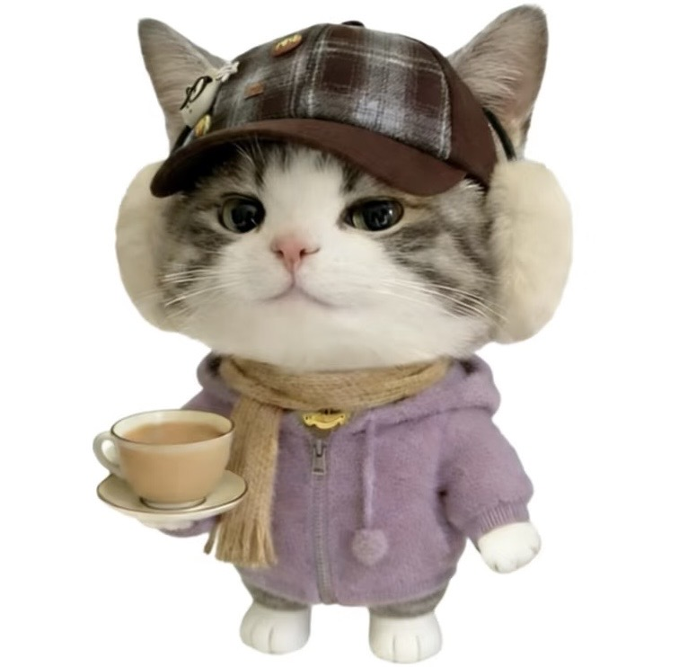
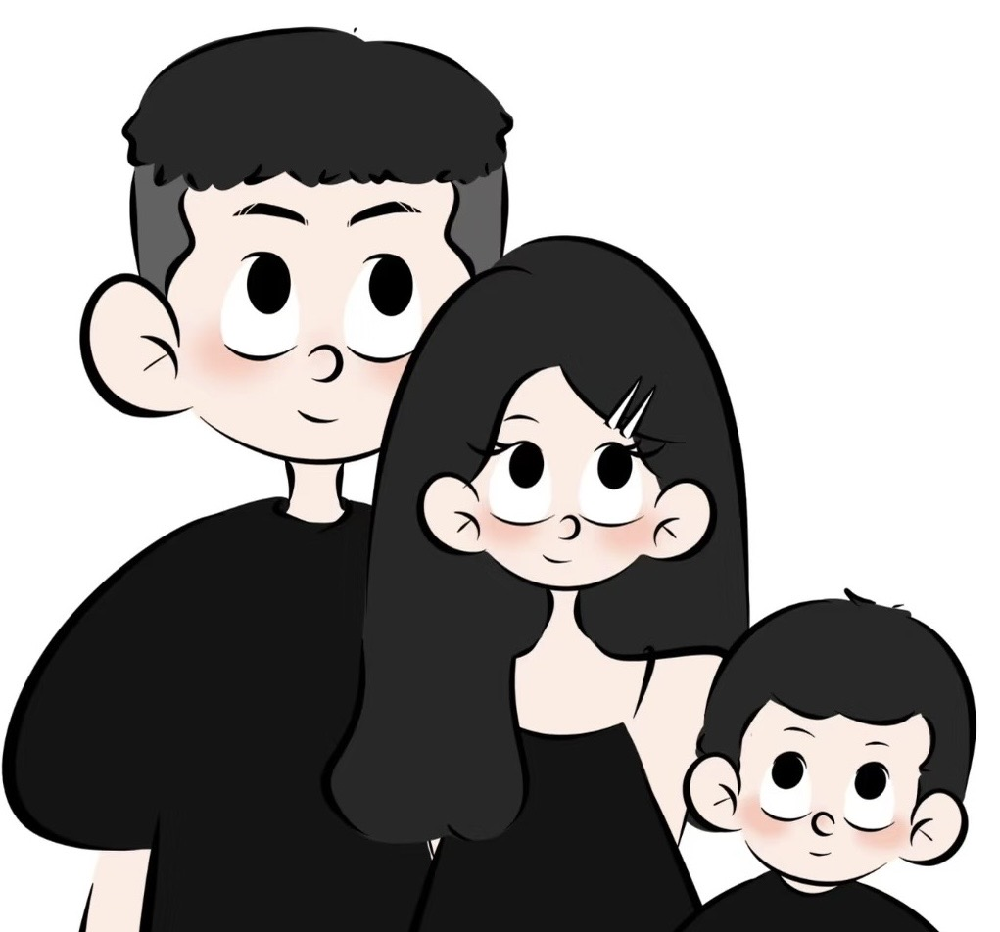
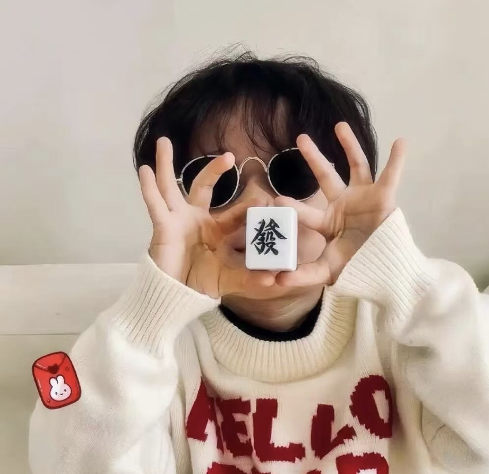
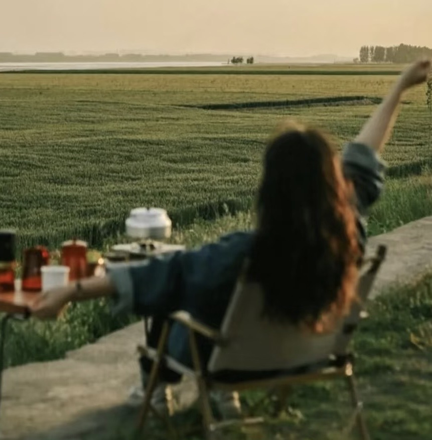

🌸 学生寄语 🌸

我来给日语班打call了，我们日语班真的是一个非常温暖的大家庭，saho老师是我遇到的最好的老师，我在学日语的路上走过很多弯路，基础特别不扎实， saho老师永远带着最大的耐心陪我一点一点学习，我的记性不太好，经常会忘记，她会不厌其烦地重复，还会鼓励我别气馁，语言最重要的就是重复。 以前觉得说日语是一件很羞耻的事情，也是saho老师告诉我口语是语言学习的基础。 现在的我甚至可以脱口而出说一些日语了，有时候想起来就觉得很神奇，很幸运能遇到日语班和saho老师，不仅学到了日语，也学会了坚持， 我可能真的会坚持把日语学一辈子，ありがとう、saho森塞。

想趁着暑假的时候在家里找个日语课上上，因为一直对动漫什么的很感兴趣。从平台上搜到这个地方，想着有试听课就去试试看。 环境很安静在大楼里，楼下也有停车位还是很方便的。本来想着就体验一下，但是老师讲课实在太有意思了，我本来是一个上课很容易走神的人都听的非常认真！ 不管是什么问题老师都很负责认真的回答，安排的很好！超级推荐大家来尝试！以后去日本再也不是哑巴了~

森塞我刚才才复试完了，外语开头卡了一下但后面答得比较顺畅，外语考官还夸我来着，我说因为咱日语班有好多课外活动。
日语班的老师水平很高，发音清晰标准，上课的时候也能关心到每一位同学，每个班还有跟班老师，以前就想学日语了，尝试过自学，放弃了好几次，但是跟着老师学习，一点也不感到学习的痛苦，反而快乐又充实。
老师我太爱你了，虽然我就上了两节课，但是我感觉比之前看网课清晰的太多了，而且我觉得你特别温柔，一点都不嫌弃我这种一点基础都没有的学生，上课之前我还想着我四个月就算学也不一定能过线，但我现在觉得肯定行！
老师我刚才才复习完刚结束，那个日语老师问我学了多长时间日语，我就说一年，她说能学到我这个程度非常厉害，太激动了。

王老师，感谢小李老师和桃太郎日语班的老师们，庆翔在桃太郎学习日语很好，小李老师教的特别好，很有耐心，总是鼓励夸奖庆翔，庆翔也很喜欢小李老师上课，日语的学习兴趣和积极性很高，来日本适应也很快，明年1月下旬就去学校上小学了，有机会回石家庄去找你们玩，感谢。
在朋友圈看到先生发大家的成绩啦，我这次也过啦。想来感谢一下先生们的指导。我因为是英语授课，也没有再系统性学日语了，语法和单词是一点没背，因为最后上课还是N4，我一直以为自己还是n4水平。我觉得是先生们让我对日语这个事有了改观，尤其是每次把知识点写在黑板上很直观，一下就能明白这节课的重点，以及每次的课后检测让我知道这节课所学的知识如何运用的，还有专门一节课的造句训练，即使回忆起来很痛苦，并且当时学的懵懵懂懂，现在也意识到这个训练对语感有很大帮助。希望现在跟着先生们学习的小朋友们也能意识到吧~ 虽然跟着先生们学习的时间不长，但是带领了我入门，帮我打好了基础，同时先生们对日语的热情也打动了我，让我不再抵触学日语这件事。
我从来没想过我会因为一次体验课接触了一个新的世界！我也去过别的机构试听不就是报课报一下2-3w好钱不是钱一样，一节课下来其实就是正常学习，但是这个日语版完全颠覆我的想法！日语班让我觉得特别的温馨，生活气息，学习氛围，日本文化、鲜活的生命力，不论是老师还是同学都特别热情，好多年轻的大学生，还有高中生，都在为了自己的目标努力，特别受影响!上完课更加喜欢这里！还有咖啡机，学习的课本，书本，空调，桌椅，上课老师也是围坐式，启蒙兴趣为主要!课后会进行自我表达，整个学习流程非常的合理，就是让你学会，会自我表达，原来新学一门新的语言这么有意思!特别好!老师还给做咖啡很喜欢。